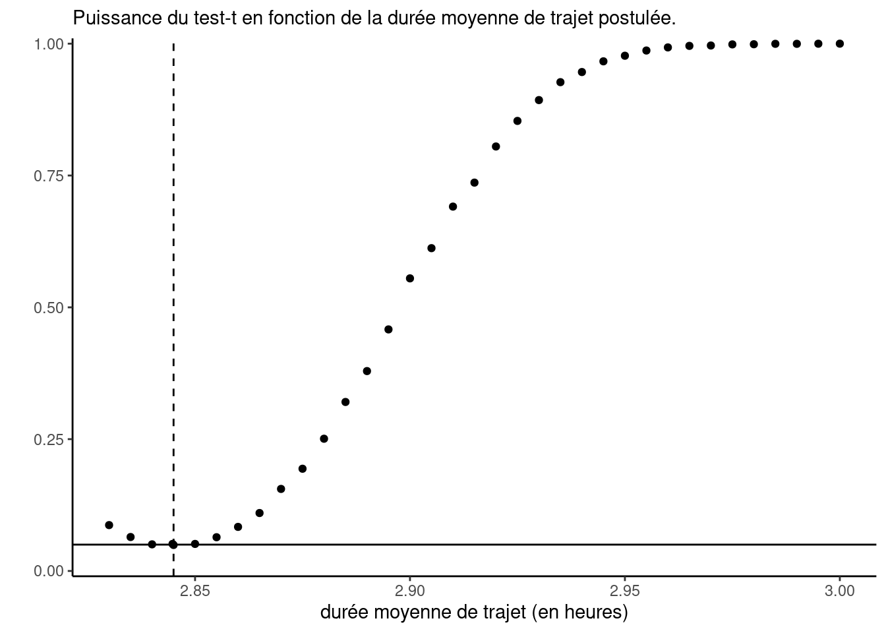

Les données renfe contiennent des informations sur 10K billets de trains vendus par la compagnie Renfe, l’entreprise ferroviaire publique espagnole. Les données incluent les variables:
prix: prix du billet (en euros);
dest: indicateur binaire du trajet, soit de Barcelone vers Madrid (0) ou de Madrid vers Barcelone (1);
tarif: variable catégorielle indiquant le tarif du billet, un parmi AdultoIda, Promo et Flexible;
classe: classe du billet, soit Preferente, Turista, TuristaPlus ou TuristaSolo;
type: variable catégorielle indiquant le type de train, soit Alta Velocidad Española (AVE), soit Alta Velocidad Española conjointement avec TGV (un partenariat entre la SNCF et Renfe pour les trains à destination ou en provenance de Toulouse) AVE-TGV, soit les trains régionaux REXPRESS; seuls les trains étiquetés AVE ou AVE-TGV sont des trains à grande vitesse.
duree: longueur annoncée du trajet (en minutes);
jour entier indiquant le jour de la semaine du départ allant de dimanche (1) à samedi (7).
Exercice 1.1
On considère le temps de parcours pour les trains à grande vitesse (AVE} etAVE-TGV}). La vraie moyenne théorique de la « population » est de \(\mu=2.845\) heures; ces quantités ont été déterminées sur la base des données complète contenant plus de 2.3 millions d’entrées et sont donc considérées comme connues, contrairement à la plupart des applications pratiques.
Une étude de simulation a été conduite pour déterminer le comportement de tests pour un échantillon. L’algorithme suivant a été répété 10K fois:
sélection d’un sous-échantillon de taille \(n=100\).
calcul de la statistique du test-\(t\) pour un échantillon correspondant à \(\mathscr{H}_0: \mu=\mu_0\) (versus \(\mathscr{H}_0: \mu \neq \mu_0\)) pour différentes valeurs de \(\mu_0\).
sauvegarde des valeurs-\(p\) associées au test.
La Figure 1 montre le pourcentage de valeur-\(p\) parmi les 10K qui sont plus petites que 0.05, c’est-à-dire la proportion de rejet (à un niveau de \(5\)%) de \(\mathscr{H}_0:\mu=\mu_0\) contre l’alternative bilatérale à \(\mu_0 \in \{2.83, 2.835, 2.84, \ldots, 2.995, 3\}\). Utilisez la courbe de puissance (Figure 1) afin de répondre aux questions suivantes:
Expliquez pourquoi la proportion de rejet de chaque test augmente quand on se déplace vers la droite sur le graphique.
Supposez que l’on répète l’expérience de simulation, mais cette fois avec des sous-échantillons aléatoires de taille \(n=1000\). Comment est-ce que les points pour le test-\(t\) pour un échantillon se compareraient à ceux tracés sur le graphique? Seraient-ils en dessous, à la même hauteur ou au dessus?
Expliquez pourquoi la valeur sur le graphique ppour un échantillon devrait être approximativement 0.05 dans un voisinage de \(\mu=2,845\).
Produisez un diagramme quantile-quantile normal et commentez sur la robustesse du test-\(t\) à des déviations de l’hypothèse de normalité.
Code
library(ggplot2)## Exercice 1.1data(renfe, package ="hecmodstat")# Sélectionner un sous-échantillon de trains à haute vitessedonnees <- renfe |> dplyr::filter(type %in%c("AVE","AVE-TGV"))# Transformer la durée en heuresduree <- donnees$duree /60# Compute summary statistics of the durationmoy_d <-mean(duree);# Étude de puissanceB <-1e4L # nombre de simulations (10 000)n <-nrow(donnees)m <-100L # taille du sous-échantillonalpha <-0.05# niveau du test# Créer une grille de durées pour le temps moyen sous l'alternativetemps <-sort(c(moy_d, seq(from =2.83, to =3, by =0.005)))# Créer un contenant pour stocker les résultatspuissance <-matrix(nrow = B, ncol =length(temps))# Fixer le germe aléatoire pour s'assurer de résultats reproductiblesset.seed(2020)for(i inseq_len(B)){ # pour chaque réplicationfor(j inseq_along(temps)){ # pour chaque alternative# Test-t pour un échantillon puissance[i,j] <-t.test(x = duree[sample.int(n = n, size = m)],mu = temps[j])$p.value# Stocker les valeurs-p }}# Créer un graphique de la puissanceggplot(data =data.frame(temps = temps,puissance =colMeans(puissance < alpha)),mapping =aes(x = temps, y = puissance)) +geom_point() +geom_vline(xintercept =2.845, linetype ="dashed") +geom_hline(yintercept = alpha) +labs(x ="durée moyenne de trajet (en heures)",y ="",subtitle ="Puissance du test-t en fonction de la durée moyenne de trajet postulée.") +scale_y_continuous(limits =c(0,1),expand =expansion(add =0.01)) +theme_classic()

Figure 1: Courbe de puissance pour le test-\(t\) pour un échantillon en fonction du temps de parcours (en heures). La ligne horizontale grise est située à 0.05, tandis que la ligne traitillée verticale marque la vraie moyenne \(\mu\).
Exercice 1.2
Supposez que l’on veut comparer le tarif moyen pour les trains à grande vitesse pour les deux destinations, soit de Madrid vers Barcelone et le trajet inverse de Barcelone à Madrid. Une étude de simulation a été réalisée dans laquelle le test de Welch pour deux échantillons a été calculé sur des sous-échantillons aléatoires de taille \(n=1000\). Les données renfe_simu contiennent les différences moyennes (difmoy), les statistiques de test (Wstat), les valeurs-\(p\) (valp) et les intervalles de confiance à 95% (icbi et icbs) pour 1000 répétitions. Supposez que l’on sait que la vraie différence moyenne dans la population est de \(-0,28\)€. Utilisez les données simulées pour répondre aux questions suivantes et commentez brièvement sur chaque sous-question.
Quel est le taux de couverture empirique des intervalles de confiance à 95% (c’est-à-dire le pourcentage des intervalles couvrant la valeur de la « vraie » différence moyenne)?
Tracez un histogramme des différences moyennes et superposez la vraie différence moyenne à l’aide d’un trait vertical.
Calculez la puissance du test (pourcentage de rejet de l’hypothèse nulle sous l’hypothèse alternative).
Exercice 1.3
À l’aide des données renfe, testez si le prix moyen du billet pour un train de classe AVE-TGV est le même que celui d’un train régio-express (REXPRESS). Veillez à
énoncer l’hypothèse nulle et l’hypothèse alternative,
justifier avec soin le choix de votre statistique de test,
rapporter la différence moyenne estimée et un intervalle à 90% pour cette différence,